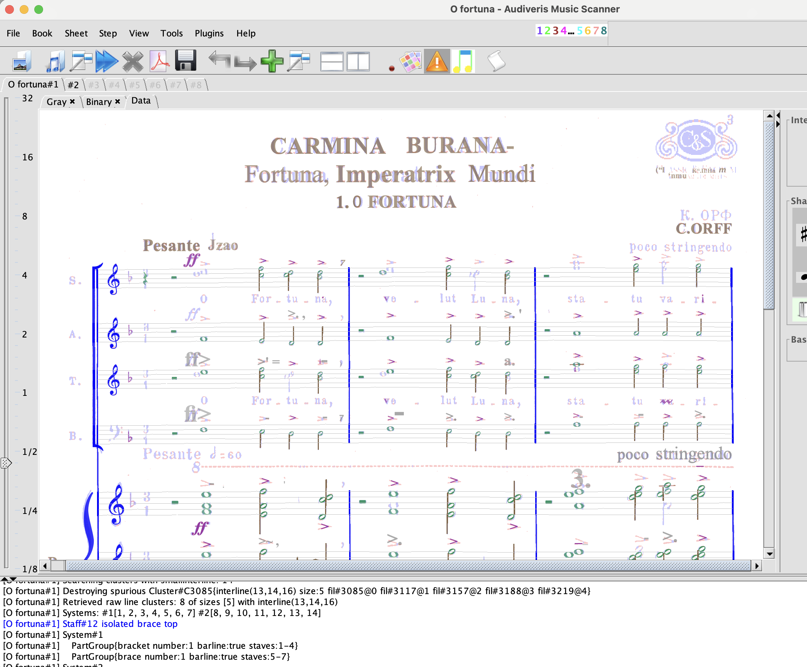

Link to the MuseScore 4 file: o_fortuna.mscz
Task:
For those who use Audiveris, discuss the aspects of your score that were not transcribed properly by the OMR engine.
For those who transcribe from scratch, discuss your experience transcribing the music. What aspects of MuseScore were intuitive and worked well? What aspects were challenging?
